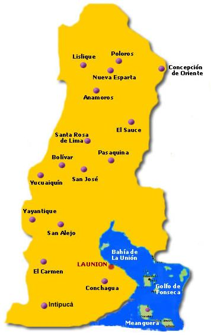

A finales del siglo XVIII el "Puerto San Carlos", recibio este nombre en honor al rey Carlos III de España, quien goberno de 1759 a 1788. En 1807, el puerto de San Carlos figura incluido como pueblo del partido de San Alejo. Ingreso el 12 de junio de 1824, en el Departamento de San Miguel. El 13 de julio de 1824, el puerto de San Carlos fue habilitado, por la Asamblea Nacional Constituyente de las Provincias Unidas del Centro de America, en concepto de "Puerto Mayor" con el nombre de Puerto de La Union Centroamericana. El 28 de febrero de 1865 se otorgo al pueblo de San Carlos de La Union el titulo de Ciudad. El 22 de junio de 1865, por D.E en la administracion de Francisco Dueñas, se erige el departamento de La Union. El licenciado Francisco Dueñas dividio el antiguo y grande departamento de San Miguel en tres: el de este nombre, el de Usulutan y el de La Union, formado este ultimo por los distritos de La Union, y el de San Antonio del Sauce (hoy Santa Rosa de Lima), a partir del 3 de febrero de 1881, durante la administracion de Rafael Zaldivar, se crea el distrito de Santa Rosa de Lima.
El clima en su mayoria es de tipo caliente, atemperado por la brisa marina. Se tiene clima fresco en las tierras altas y cumbres de montañas
El departamento de La Unión posee una amplia red fluvial, en la que existen rios, esteros, cañadas, bahias, etc. Las principales cuencas hidrograficas estan formadas por los rios: Goascoran (71 km), Sirama (44 km), Lislique (28.5 km) y Güeripe (23km). Existen las lagunas de Olomega, Los Negritos o Maquigüe, El Pilon, Managuara, Los Chorros o Los Mangos, El Cipres y Poza del Hangar, asi como las bahias de La Union, Santa Ana y La Playona.
Entre los principales puntos de interes turistico sobresalen las playas del Tamarindo, Playas Negras y Playitas, el volcan de Conchagua, que en lengua lenca recibe el nombre de Amapala (Cerro de las culebras), la localidad de Lislique, un notable centro artesanal y la ciudad de La Union, la cabecera del departamento y un importante puerto.